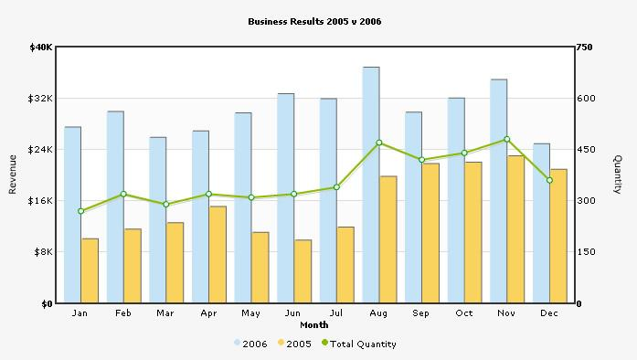

Combination Chart XML |
Combination charts are helpful when you want to plot multiple chart types on the same chart or use two different scales for two different axes. FusionCharts Free offers Dual Y Axis Combination Charts. In these charts, there are two y-axes, which can represent different scales (e.g., revenue and quantity or visits and downloads etc.). The axis on the left of the chart is called primary axis and the one on right is called secondary axis. FusionCharts Free has 2D and 3D charts for both the above categories. Shown below is a 2D Dual Y Combination Chart. |
|  |
As you can see in the image above, we're plotting a monthly sales and quantity chart. On the x-axis, we've the month names and we have two y-axis one for depicting sales and the other for depicting quantities.
For Dual Y Axis combination charts, it is necessary to provide atleast 2 datasets - one for the primary axis and the other for the secondary axis. If you do not provide this, the chart would not render properly. The XML for the above Dual Y Axis chart looks as under: |
|
<graph caption='Business Results 2005 v 2006' PYAxisName='Revenue' SYAxisName='Quantity' xAxisName='Month' showValues='0' decimalPrecision='0' bgcolor='F3f3f3' bgAlpha='70' showColumnShadow='1' divlinecolor='c5c5c5' divLineAlpha='60' showAlternateHGridColor='1' alternateHGridColor='f8f8f8' alternateHGridAlpha='60' SYAxisMaxValue='750' > <categories> <category name='Jan' /> <category name='Feb' /> <category name='Mar' /> <category name='Apr' /> <category name='May' /> <category name='Jun' /> <category name='Jul' /> <category name='Aug' /> <category name='Sep' /> <category name='Oct' /> <category name='Nov' /> <category name='Dec' /> </categories> <dataset seriesName='2006' parentYAxis='P' color='c4e3f7' numberPrefix='$'> <set value='27400' /> <set value='29800' /> <set value='25800' /> <set value='26800' /> <set value='29600' /> <set value='32600' /> <set value='31800' /> <set value='36700' /> <set value='29700' /> <set value='31900' /> <set value='34800' /> <set value='24800' /> </dataset> <dataset seriesName='2005' parentYAxis='P' color='Fad35e' numberPrefix='$'> <set value='10000' /> <set value='11500' /> <set value='12500' /> <set value='15000' /> <set value='11000' /> <set value='9800' /> <set value='11800' /> <set value='19700' /> <set value='21700' /> <set value='21900' /> <set value='22900' /> <set value='20800' /> </dataset> <dataset seriesName='Total Quantity' parentYAxis='S' color='8BBA00' anchorSides='10' anchorRadius='3' anchorBorderColor='009900' > <set value='270' /> <set value='320' /> <set value='290' /> <set value='320' /> <set value='310' /> <set value='320' /> <set value='340' /> <set value='470' /> <set value='420' /> <set value='440' /> <set value='480 '/> <set value='360' /> </dataset> </graph> |
| Brief Explanation |
| The XML structure for a combination chart is very similar to that of multi-series chart. So, we won't be discussing it all over again- what we'll be discussing are the differences between them. |
| Dual Y Axis Combination Charts |
| In Dual Y Axis Combination Charts, you've two y-axes. Each y-axis can have its own scale and number formatting properties. You can also explicitly set y-axis lower and upper limits for both the axes. You choose the axis for each dataset using the parentYAxis property of <dataset> element. This attribute can take a value of P or S. P denotes primary axis and S denotes secondary axis. Like, in our above example, we have the revenue datasets - '2006' and '2005' set on primary axis: <dataset seriesName='2006' parentYAxis='P' ... > and the Quantity dataset set on secondary axis: <dataset seriesName='Total Quantity' parentYAxis='S' ... > In Dual Y 3D Combination Charts, the column chart always plots on the primary axis and lines on the secondary. You can have more than one primary or secondary datasets but at least one of each is required. |